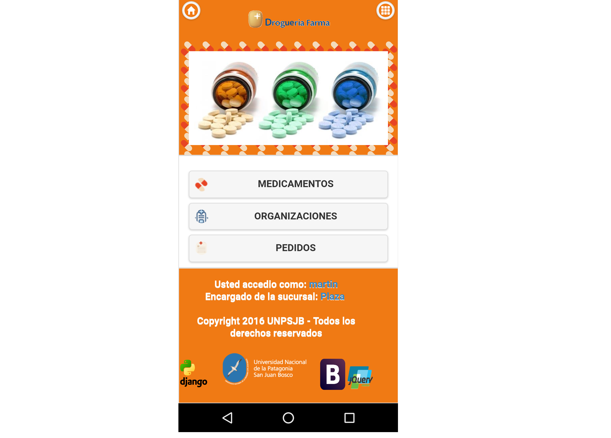

Vista Movil¶
La Vista Mobil cuenta con algunas funcionalidades para complementar el uso de la Aplicacion de escritorio y para comodidad de los encargados. Estas funcionalidades son:
Pantalla Principal¶
Si el usuario desea utilizar la Vista Movil, deberá hacerlo desde un celular o dispositivo movil. Y vera la siguiente pantalla:
Campos de la Pantalla Principal¶
En la pantalla principal se veran los siguientes datos:
- Debera elegir entre los siguientes campos de a cuerdo a lo necesitado
- Presionar el botón
Medicamentos. - Presionar el botón
Organizaciones. - Presionar el botón
Pedidos.
- Presionar el botón
Medicamentos¶
Aqui encontraremos todos los Medicamentos cargados en el sistema.
Podremos realizar la Busqueda de uno desde el filtro superior.
Nos mostrara una pantalla con el detalle del medicamento en particular seleccionado.
Atención
En el caso de ser un Encargado de Pedido o Encargado de una sucursal, veremos un boton para añadir ese medicamento a un pedido.

Añadir a Pedido¶
A travez del boton de Añadir a Pedido accederemos a una pantalla donde podremos agregar la cantidad a pedir de ese medicamento.
Una vez insertada la cantidad debemos presionar en el boton de Pedir
Automaticamente nos mostrara un mensaje:
Ademas cuando terminemos de cargar todos los Medicamentos que querramos debemos presionar en el boton de Finalizar Pedido
Organizaciones¶
Aqui encontraremos todas las Organizaciones cargados en el sistema.
Podremos realizar la Busqueda de uno desde el filtro superior.
Nos mostrara una pantalla con el detalle de la organizacion en particular seleccionada.
Pedidos¶
Aqui encontraremos todos los Pedidos cargados en el sistema.
Podremos realizar la Busqueda de uno desde el filtro superior.
Nos mostrara una pantalla con el detalle de el pedido en particular seleccionada.
Informacion Extra¶
Ademas podremos acceder a informacion acerca de la organizacion Farma, presionando en el boton de menu a continuacion:
Tambien desde cualquiera de las pantallas presionando el boton de Home en la parte superior accedemos a la pantalla principal de la aplicacion.